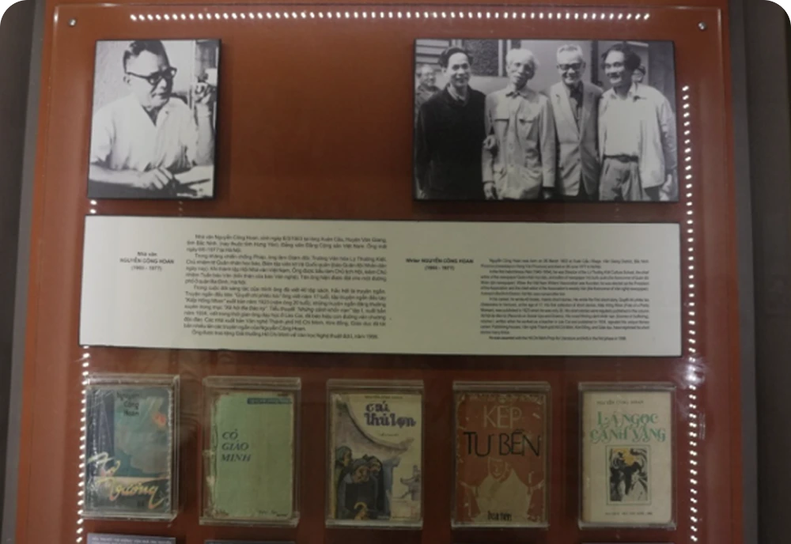
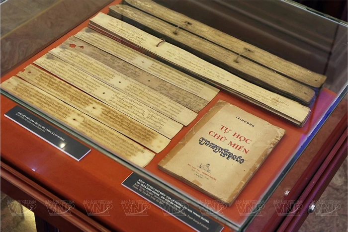

Chuyện bảo tàng
Lắng nghe những câu chuyện
sau mỗi không gian trưng bày.

NHỮNG CÂU CHUYỆN ĐƯỢC KỂ
07 bài viết
Bạn đã xem 7 / 7 bài viết
Lắng nghe những câu chuyện
sau mỗi không gian trưng bày.

07 bài viết
Bạn đã xem 7 / 7 bài viết